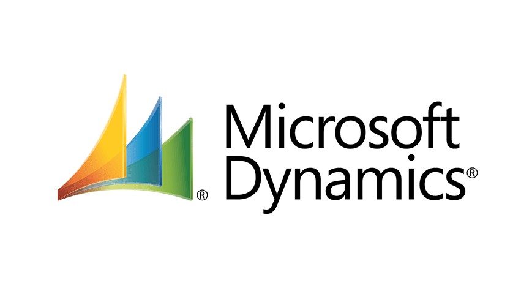
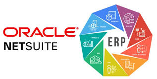
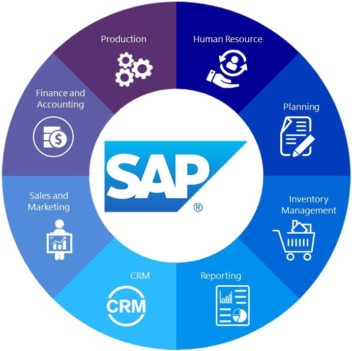

ERP systems play a central role in the modernization of accounting and finance because they unify core business processes within a single structured environment. Rather than relying on disconnected software, duplicated inputs, and fragmented reporting workflows, organizations can use ERP platforms to centralize financial activity and improve consistency across the enterprise. In practice, this means accounting teams gain a more reliable operating structure for transaction processing, period-end reporting, approvals, and cross-functional coordination.
This matters because accounting performance is shaped not only by technical accuracy, but also by the quality of the systems through which financial information flows. When purchasing, inventory, billing, payroll, and reporting all operate within one integrated environment, finance teams spend less time reconciling disconnected records and more time analyzing results. ERP systems therefore help reduce friction, strengthen data continuity, and create a better foundation for financial visibility.
In a modern business environment, ERP platforms do not simply support accounting operations — they help define the infrastructure through which accounting becomes more scalable, controlled, and strategically useful. The sections below highlight the most important ways ERP systems strengthen integration, automation, and governance across finance functions.

Modern accounting performance depends heavily on the ability to move information across departments without disruption or rework. ERP systems support this by connecting accounting, purchasing, inventory, sales, payroll, and reporting activities within one centralized environment. Instead of managing transactions across multiple disconnected systems, organizations can establish a more reliable flow of financial data from source entry through final reporting.
This integrated structure improves consistency because data is captured once and then used across multiple processes rather than repeatedly re-entered or manually transferred between platforms. As a result, accounting teams spend less time correcting inconsistencies and more time reviewing meaningful financial information. Integration also improves cross-functional visibility, which is especially important in organizations where operational activity directly affects accounting outcomes.
Solutions such as SAP S/4HANA, Oracle NetSuite, and Microsoft Dynamics 365 help finance teams reduce redundancy, improve coordination, and maintain a more dependable source of truth for financial reporting.

A modern finance department cannot scale effectively when core accounting activities depend on manual workarounds and inconsistent procedures. ERP systems improve performance by embedding standardized workflows directly into the operating environment, allowing organizations to automate recurring tasks such as invoice routing, journal entry posting, reconciliations, consolidations, and approval chains. This produces a more disciplined accounting structure where execution is shaped by configured business rules rather than informal habits.
Standardization is especially valuable because it reduces variation across users, departments, and reporting cycles. When processes are system-driven rather than manually improvised, the close process becomes more repeatable, approvals become more traceable, and operational bottlenecks become easier to identify. This not only improves efficiency, but also reduces the risk of inconsistent treatment across transactions and reporting periods.
Platforms such as Workday, Oracle NetSuite, and Dynamics 365 Finance help organizations create repeatable, system-driven accounting workflows that improve consistency while reducing manual effort.

The modernization of accounting is not only about working faster — it is also about improving transparency, control, and financial oversight. ERP systems help achieve this by embedding approval workflows, audit trails, access restrictions, and transaction histories directly into the platform. This gives finance leaders a more controlled environment for monitoring activity, identifying issues, and maintaining compliance without relying on separate tracking tools or delayed reporting.
Real-time visibility strengthens decision-making because financial and operational data can be reviewed closer to the point at which activity occurs. This allows teams to respond more quickly to unusual variances, workflow bottlenecks, or control concerns before they become larger problems. In accounting environments where timing, traceability, and compliance are important, that level of visibility can materially improve both oversight and responsiveness.
Solutions such as SAP, Oracle NetSuite, and Microsoft Dynamics 365 support dashboards, role-based security, and traceable transaction histories that improve audit readiness and financial decision-making.